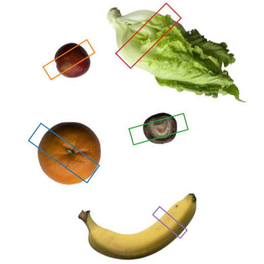

A Generic Framework for Damage-Free Grasping of Delicate Produce Using LLMs and Volume Estimation

Abstract
Despite notable progress in agricultural robotics, achieving stable, adaptive, and damage-free grasping of irregular, fragile, and diverse produce remains a key unsolved challenge. Traditional approaches rely on geometric heuristics or fixed-force strategies, which cannot accurately model or adapt to the complex physical properties of various produce, often causing instability or damage. To the best of our knowledge, this paper proposes the first adaptive damage-free grasping framework that integrates large language models (LLMs) with multimodal perception to produce. We develop an intelligent framework combining semantic understanding from visual images, geometric awareness from 3D point clouds, and LLMs commonsense knowledge to infer the minimal stable grasping force, enhancing safety and adaptability. To enhance accuracy and robustness, we introduce a point-cloud-based volume estimation module that directly leverages spatial geometry, thereby minimizing reliance on LLMs reasoning and significantly improving perception quality and estimation precision. Moreover, we design a hybrid multi-agent collaboration mechanism that efficiently coordinates perception, reasoning, and control agents, improving reasoning and execution in complex environments. Experiments on a custom dataset of 25 typical produce categories show our framework significantly outperforms state-of-the-art baselines in both volume estimation accuracy and damage-free grasp success rate, demonstrating excellent stability, robustness, and truly damage-free capability. This work validates the effectiveness of combining LLMs and multimodal perception in agricultural robotics and suggests a promising direction for future research toward intelligent and reliable grasping.
A piece of lettuce
Banana
Grape
Lettuce
Mushroom
Nectarine
Orange
Pepper
Model Structure
This study presents a new framework for damage-free grasping of delicate produce, merging 3D point cloud geometric perception with large language models (LLMs). This innovative approach, the first of its kind in agricultural robotics, improves grasping adaptability and accuracy by combining visual perception with language-based reasoning. The system has three main modules. First, a 3D perception module uses advanced visual models to process RGB images and depth maps, extracting 3D geometric information. Next, a physical property reasoning module leverages LLMs to infer crucial physical properties like density and friction coefficients from semantic labels and geometric data. Finally, a grasp strategy generation and execution module uses the reasoned properties to calculate the minimum required force and generate optimal grasp poses, which are then executed by a force-controlled gripper. This integrated system ensures stable, damage-free grasping across various types of produce.
Experiments
The "Experiments" section aims to evaluate the proposed multimodal damage-free grasping framework, focusing on LLMs reasoning-based performance, grasp force control, and comparing the effectiveness of different estimation pathways. The experiments were conducted on a custom dataset comprising 25 typical produce categories. Overall, the framework significantly outperforms state-of-the-art baselines in both volume estimation accuracy and damage-free grasp success rate.
Verification of framework validity
|
The framework's validity is demonstrated by its success in achieving truly damage-free and stable grasping across diverse, fragile produce. The key findings include:
|
 |
Our model VS Others
BibTeX
@article{DaFrGrasp,
title={A Generic Framework for Damage-Free Grasping of Delicate Produce Using LLMs and Volume Estimation},
author={Zhang, Ziye and Xia, Xiaoyu and Jin, Yuhao and Gao, Qizhong and Qiao, Lin and Chen, Jinglei and Yue, Yong and Yao, ShanLiang and Zhu, Xiaohui},
year={2025},
doi={}
}